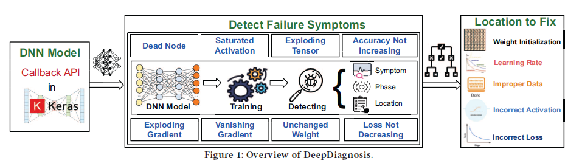
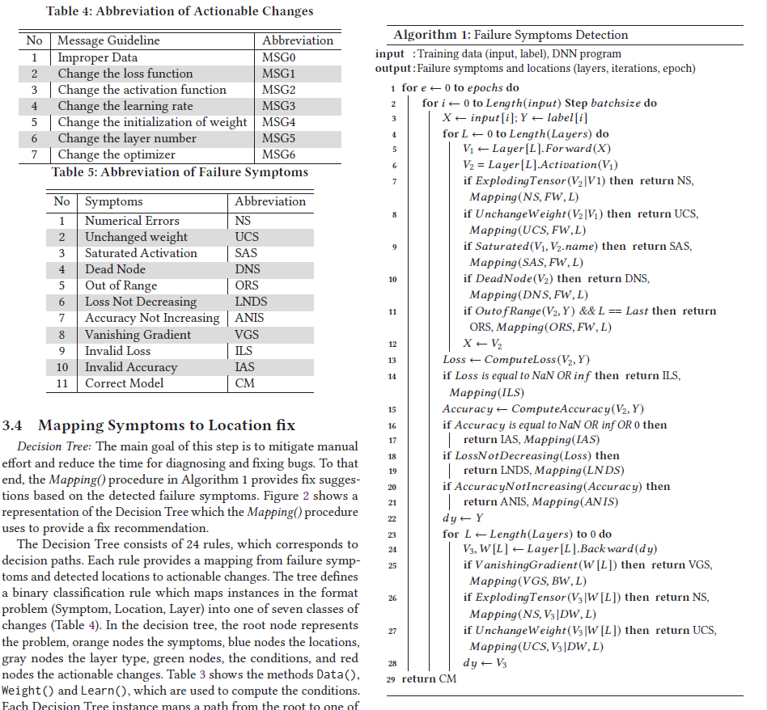
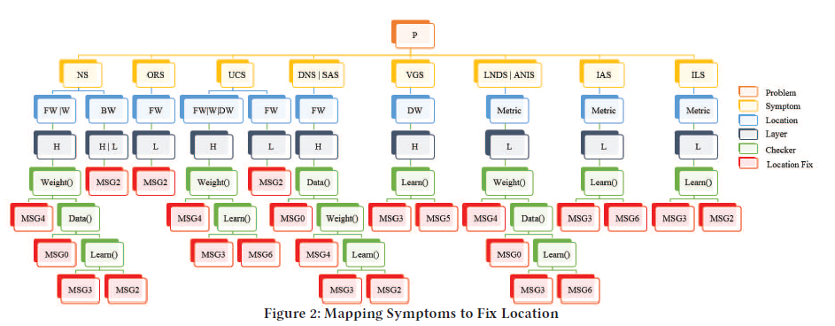

读paper1-针对DL的缺陷分类与修复
读paper1-针对DL的缺陷分类与修复
缺陷分类：An Empirical Study on TensorFlow Program Bugs
与传统程序的比较
与传统应用程序的编程范式相比，DL应用程序的编程范式存在显著差异。在传统应用程序中，程序是直接编写解决目标问题的模型。
然而，DL应用程序的程序并不直接编码问题解决模型。相反，DL应用程序的程序编码了一个理想的DL模型的网络结构，以及利用大量数据进行训练的过程。网络结构和训练过程都需仔细设置超参数。DL应用程序的开发往往面临着开发传统应用程序中很少遇到的任务，例如配置由节点层组成的复杂网络结构（也称为计算图）。此外，训练过程包含着依赖于超参数调整的计算密集型循环，如学习率和丢弃率的调整。
出现Bug的几个原因
错误的模型参数或结构（IPS）
- 不恰当的模型参数（如学习率）或错误的模型结构（如缺失节点或层）
- 或者说是模型本身就是有问题或者是将模型编码为代码时出现错误（比如少打了一个参数或者忘记平方）
不对齐的张量（UT）
- 输入张量的形状与预期的形状不匹配
与TensorFlow计算模型的混淆（CCM）
- 当TensorFlow用户不熟悉TensorFlow所假设的底层计算模型时，就会出现错误。这种类型错误的主要症状是准确度和损失结果不佳，被归类为“低效性”。当TensorFlow用户在TensorFlow计算语义上出现混淆时，程序不会编码一个有效的深度学习模型。因此，基于无效深度学习模型的训练过程是不有效的，即使它不一定会导致TensorFlow错误。
TF API的改变（APIC）
- 老API被弃用或者迁移到新API造成的问题
TF API的误用（APIM）
结构低效（SI）
- SI和IPS之间的主要区别在于，SI会导致性能低效，而IPS会导致功能上的错误。
Bug之外的新挑战-错误检测（有的Bug并不导致崩溃）
在该文的工作中，46.9% 的bug总是导致程序崩溃并且一定能够被检测到。作者在检测其余53.1%的bug时，总结了三个新的挑战。
概率性正确性。
由于DL本身就是黑盒以及模型并不能做到100%准确，导致在出现错误的结果时很难确定是模型的低效（没有很好的进行学习）还是出现bug。基于此作者提出了几个解决策略：
使用固定阈值比较整体准确度和损失。
- 当训练模型在训练集或测试集上无法达到预期的准确度或损失时，认为模型存在 bug。
- 或者说，我们认为模型学习率很低时与存在Bug无异。
- 问题在于，模型的训练可能花费很长时间，导致这个过程很低效。
比较迭代中准确度和损失的相对变化。
- 预期准确度在迭代过程中呈增长趋势，而损失预期呈下降趋势。如果在多个迭代中没有观察到明显的增长或下降趋势，TF 用户将认为模型存在错误。
- 问题在于，这些挑战和策略需要新的测试技术和框架。首先，大多数测试框架不支持统计正确性，需要开发确定统计正确性的机制。其次，传统的测试生成技术是为了绝对正确性而设计的，如何高效地触发具有统计正确性特征的错误尚不清楚。第三，统计正确性只是概率正确性的近似，但如何衡量置信度尚不明确。可以开发新的理论来衡量测试 TensorFlow 程序的置信度。
巧合的正确性。
虽然在训练过程中触发了错误，但训练模型在测试集上仍然达到了理想的准确度和损失。这些错误最终是通过代码审查发现的。
TF 程序的计算是由张量驱动的，这些张量通常由具有大尺寸的多维数组建模。经过多次计算迭代后，数组中个别元素的值对最终分类结果（例如汽车前方是否有障碍物）的影响较小。此外，大多数计算采用非线性激活函数，其输出对某些输入范围不敏感。因此，计算错误更有可能对最终结果产生不可观察的影响。换句话说，TF 程序对计算错误更具容忍性。因此，与传统对应程序相比，TF 程序的巧合正确性发生的规模更大。
随机执行。
由于训练阶段的随机性质，可能会出现两次执行表现不同的情况，这使得复现错误变得困难。
许多传统程序也具有非确定性，然而，在 TF 应用中，这个问题更加严重，因为几乎任何执行都受到非确定性的影响。需要进行更多研究来处理 TF 应用中的非确定性问题。
Bug定位的挑战
作者认为，在构建阶段引发错误时，bug通常可以确定地定位。在这种情况下，跟踪依赖距离较短，相比于涉及大量迭代和概率计算的执行阶段中的依赖距离。此外，错误消息中嵌入的信息可以帮助定位bug。可以通过从错误消息提供的有问题的语句反向跟踪依赖来检查程序。
而当故障执行涉及到执行阶段时，错误行为变得随机，导致故障定位工作量的大幅增加。与传统程序相比，作者确定了在定位这些bug时面临的两个主要挑战。
高度相互依赖的神经网络。
传统程序中的元素/模块的耦合度往往很低。如果我们从发生错误或产生不正确输出的地方进行动态切片，切片结果通常只包含程序中的一小部分编码实体。
然而，在神经网络中，当前层中的节点通常高度依赖于上一层的节点。此外，在训练阶段，由于反向传播，依赖关系变得双向。因此，切片在提供帮助方面很有限，切片通常包含神经网络中所有节点，对调试没有帮助。
神经网络行为的不确定性
调试传统程序的一种典型方法是通过比较变量的值和它们的期望值来检查特定程序点上的程序状态。然而，在神经网络中，由于程序行为对训练过程中赋予的超参数很敏感，程序员很难预测某一特定程序点的期望值。因此，尽管可以在训练过程中访问神经网络的中间状态，但往往很难根据这些状态来判断其正确性。
同时，作者也列举了三个常用的Bug定位策略：
- 超参数替换
- 检查变量值的分布
- 切换训练数据集
缺陷分类：A Comprehensive Study on Deep Learning Bug Characteristics
该文指出，数据Bug和逻辑Bug是深度学习软件中最严重的Bug类型，出现频率超过48%，这些Bug的主要根本原因是模型参数不正确（IPS）和结构效率低下（SI），出现频率超过43%。作者还发现，在使用深度学习库时存在一些常见的反模式。研究结果显示，bug的分布与反模式之间存在很强的相关性。
该文对缺陷的分类与上一文类似。在分类中，作者关注三个准则，即bug类型、根本原因和bug的影响
深度学习软件中的缺陷的类型
- API 缺陷：即由DL框架的API引发的Bug
- 编码缺陷：编码错误造成的Bug
- 数据缺陷：数据集格式问题/脏数据
- 结构性缺陷：大部分深度学习bug是由于深度学习模型结构的不正确定义而导致的。这包括深度学习模型不同层之间的维度不匹配、训练和测试数据集之间存在异常、在实现特定函数时使用了不正确的数据结构等。进一步细分：
- 控制流和序列化的缺陷。
- 数据流缺陷。
- 初始化缺陷。
- 逻辑缺陷。
- 处理策略缺陷
- 非模型结构性缺陷：也就是说在模型建模之外的缺陷
根据缺陷的根本原因进行分类
- 缺乏类型检查
- API的修改
- API误用
- 计算模型的混淆。
- 错误的模型参数或结构
- 其他：一些开发过程中的错误（如语法错误）
- 结构低效（SI）
- 不对齐的张量（UT）
- 错误的文档
作者还将这些bug分类到深度学习流程的不同阶段，以了解哪些阶段更容易受到bug的影响。
根据缺陷的影响进行分类
- 模型表现不佳（性能差
- 崩溃
- 数据损坏
- 卡死
- 功能错误
- 内存越界
同时，根据作者的收集情况，作者给出了如下几个发现：（感觉不是很重要）
从缺陷的出现频率来看：
- 数据错误出现的频率超过26％
- Caffe 有更多的结构逻辑错误
- Torch、Keras和Tensorflow分别具有16%、11%和11%的API错误
- 所有的 bug 类型在 Github 和 Stack Overflow 中对于所有的库都有类似的模式
从缺陷出现的根本原因来看：
- IPS是导致 bug 最常见的根本原因，平均约占 bug 的 24%。IPS 导致的 bug 会在运行时使程序崩溃，执行失败。
- Keras和Caffe中有25%和37%的bug源自结构效率不佳(SI)。SI类型的bug不会导致程序崩溃，而是经常导致深度学习模型性能不佳。这些bug与质量服务(QoS)或非功能性需求有更多关联。
- Torch中28%的bug是由于未对齐的Tensor（UT）引起的。
- Theano中30%的错误是由于缺乏类型检查
- Tensorflow 和 Kera 有9% 和7% 的 bug是由于API的改变
- 除了 API 滥误用所有其他根本原因在 Github 和 Stack Overflow 中都有类似的模式，这是 bug 的根本原因（与上一点钟的第四条对应的）
- SI 贡献了3% -53% ，IPS 贡献了24% -62% 的模型相关错误
从缺陷导致的影响来看：
- 超过66％的缺陷导致崩溃。
- 在Caffe、Keras、Tensorflow、Theano和Torch中，31%、16%、8%、11%和8%的错误导致了性能不佳
- 12％的错误导致功能不正确
- 对于所有的库来说，Stack Overflow 和 Github bug 效应的 P 值拒绝了 null 假设，以确认这些 bug 与 Stack Overflow 和 Github bug 具有相似的效果（没看懂这个）
从深度学习的不同学习阶段来看：
- 32%的缺陷出现在数据准备阶段
- 27%出现在训练阶段
- 23%出现在模型选择阶段
缺陷的一些共性：Tensorflow 和 Kera 具有相似的反模式分布，而 Torch 具有不同的反模式分布
缺陷的演变：结构缺陷在增加、数据缺陷在减少
作者认为开发数据验证工具可以帮助程序员解决大量的数据bug。由于深度学习模型与数据密切相关，因此开发模型分析工具来探索特定模型是否适合手头的数据，可以帮助解决数据和模型相关问题的耦合性。
同时作者认为，结构逻辑缺陷这类问题可以通过一些自动化的模型和参数推荐工具来解决。如何开发这类工具需要进一步的研究。一种方法是使用Python数据集挖掘大规模的开源代码库，识别最常见的代码模式，并从常见的代码模式中提供示例。
缺陷（修复）分类：Repairing Deep Neural Networks Fix Patterns and Challenges
由于修复使用DNN的软件是一个明显的SE需求，自动化工具可能非常有帮助，因此充分了解修复DNN中的错误时的挑战和使用的模式是至关重要的。自动修复工具应该解决哪些挑战？哪些修复模式可以帮助开发人员自动化修复？哪些修复模式应该优先考虑？
该研究发现，与传统的错误修复模式相比，DNN的错误修复模式是独特的；最常见的错误修复模式是修复数据尺寸和网络连接；DNN错误修复有可能引入对抗性漏洞；DNN错误修复经常引入新的错误；当修复错误时，DNN错误定位、训练模型的重复使用和应对频繁发布是开发人员面临的主要挑战。
缺陷修复范式分类
- 损失函数：在训练过程中添加、删除或更新损失函数
- 改变DNN中节点之间的连接
- 增加中间层（隐藏层）
- 数据维度：将DNN的输入维度与数据维度对齐
- 准确度指标：针对不同类型的问题选用不同指标进行评估，使得指标能更好的描述模型的效能
- 选用正确的数据类型
- 调整激活函数
- 调整训练过程运行的次数
- 版本相关：正确的版本，正确的API使用
- Data Wrangling. （数据清洗？）
- 训练过程中进行监控：并不修复代码中的缺陷，但有助于定位错误
- 优化算法进行优化
- 改变神经结构
深度神经网络中最常见的错误修复模式
针对数据维度
- 修复数据维度是最常见的错误修复模式（占18.8%），可能影响DNN模型的稳健性。
- （Resize，调整输入数据的大小）在Stack Overflow中，63%与调整大小相关的帖子利用了降采样/降维？（downscaling）的方法，这可能会降低DNN的稳健性。
- （Reshape，输入向量的形状发生变化时进行重塑；Reorder，重排）在Stack Overflow中，重排和重塑（79.7％的数据维度修复）需要对DNN层的规格以及库有一定的了解。
针对层次维度
- 在GitHub上，15.6%的修复操作是针对与层维度相关的错误（75.9%的崩溃错误）进行的。
- 这些修复操作通常包括根据相邻层的结构进行维度的减少或添加。然而，这些修复操作可以通过改变数据维度以使其与层维度匹配。可能出现维度灾难。
版本相关修复
- 在GitHub上，版本相关的bug修复占比最高（17.6%）
针对神经网络连接的修复
- 网络连接是在Stack Overflow（17.8％）和GitHub（14.1％）中普遍出现的修复方法，用于修复崩溃（57.14％），功能不正确（16.19％）和性能不佳（12.38％）的问题。
- 合并层
- 添加反馈循环和输入层
- 迁移学习
增加层：但是可能增加训练时间
针对损失函数：添加或修正
作者提及了通过缺陷类型、库进行修复，但同时，现有的很多缺陷修复引入了新缺陷
修复DNN Bug的主要挑战
- Bug定位：由于错误与其原因之间的复杂关系，定位Bug特别具有挑战性。
- 频繁发布：DNN库（尤其是TensorFlow）的快速发布周期导致了高维护负担，特别是由于频繁的向后不兼容更改。
- 模型重用：在重用预训练模型时，开发者常常面临与新应用程序意图不匹配的问题，导致模型过拟合或引入偏差。
总结
前两篇给出了几个主要原因：
- 错误的模型参数或结构
- 不对齐的张量
- API的改变（不同版本）与API的误用（misuse）
- 数据缺陷：数据集格式问题/脏数据
- 结构性缺陷
- 编码缺陷：编码错误造成的Bug
第三篇针对缺陷的一些主要原因，如模型问题、结构性问题、API问题以及数据集问题给出了相应的一些解决方案
缺陷检测：DeepDiagnosis: Automatically Diagnosing Faults and Recommending Actionable Fixes in Deep Learning Programs
针对DNN的缺陷定位与修复
作者总结了先前工作的8种常见缺陷：
死节点
- 学习率过高/过低（过拟合/欠拟合）。
- 存在较大的负偏差
- 权重或偏差初始化不当。
饱和激活
- 输入数据过大或过小；
- 权重或偏置初始化不当；
- 学习率过高或过低。
数值爆炸（Exploding Tensor
- 学习率过大；
- 权重或偏差初始化不当，或者输入数据不当
准确率不增加 & Loss没有减少
- 存在不适当的训练数据；
- 层数过多/过少；
- 学习率过高/过低；
- 存在不正确的激活函数
不变的权重（随着模型学习/训练
- 学习率非常低；
- 优化器选择不正确；
- 存在错误的权重初始化；
- 最后一层存在错误的损失函数/激活函数
梯度爆炸
- 学习率过高；
- 权重或偏置初始化不当；
- 数据输入存在问题；
- batch size 非常大。
梯度消失
- 网络层数过多；
- 学习率过低；
- 隐藏层不适当地使用了Tanh或Sigmoid函数；
- 存在不正确的权重初始化问题

缺陷检测算法
总的思路是根据不同的缺陷检测函数（针对上面提到的缺陷）返回缺陷检测结果（Table5中的内容），然后提供必要参数来调用决策树中的Mapping()函数（在图2中）。决策树将为模型返回最佳的可操作修复。
主要分为两个阶段：第一阶段是前向阶段，在此阶段算法执行动态分析和症状检测，包括数值错误、死节点、饱和激活和超出范围，在第4-12行。第二阶段是反向阶段，在此阶段算法执行动态分析以检测附加的症状，如数值错误、梯度消失和权重不变，在第23-28行。
初始化训练周期和数据批次：
- 在所有训练周期中（从第0周期到最大周期
epochs），对于每个输入数据批次（从第0到输入数据的长度，步长为批次大小batchsize），提取输入数据X和标签Y。
- 在所有训练周期中（从第0周期到最大周期
前向传播阶段：
- 对于每一层，从第0层到网络层的长度：
- 计算当前层的前向输出
V1。 - 计算应用激活函数后的输出
V2。 - 检测是否存在数值错误（Exploding Tensor），如果是，返回NS错误症状并调用
Mapping函数进行故障定位。 - 检测是否存在未变化的权重（Unchanged Weight），如果是，返回UCS错误症状并调用
Mapping函数进行故障定位。 - 检测是否存在饱和激活（Saturated Activation），如果是，返回SAS错误症状并调用
Mapping函数进行故障定位。 - 检测是否存在死节点（Dead Node），如果是，返回DNS错误症状并调用
Mapping函数进行故障定位。 - 检测是否存在超出范围的值（Out of Range），如果是，返回ORS错误症状并调用
Mapping函数进行故障定位。 - 将当前层的输出
V2作为下一层的输入X。
- 计算当前层的前向输出
- 对于每一层，从第0层到网络层的长度：
计算损失和准确率：
- 计算当前模型的损失值
Loss和准确率Accuracy。 - 如果损失值是NaN或无穷大，返回ILS错误症状并调用
Mapping函数进行故障定位。 - 如果准确率是NaN、无穷大或0，返回IAS错误症状并调用
Mapping函数进行故障定位。 - 检查损失值是否未减少，如果是，返回LNDS错误症状并调用
Mapping函数进行故障定位。 - 检查准确率是否未增加，如果是，返回ANIS错误症状并调用
Mapping函数进行故障定位。
- 计算当前模型的损失值
反向传播阶段：
- 计算损失函数相对于权重的梯度（
dy）。 - 对于每一层，从最后一层到第0层：
- 计算当前层的反向传播输出
V3和权重梯度W。 - 检测是否存在消失梯度（Vanishing Gradient），如果是，返回VGS错误症状并调用
Mapping函数进行故障定位。 - 检测是否存在数值错误（Exploding Tensor），如果是，返回NS错误症状并调用
Mapping函数进行故障定位。 - 检测是否存在未变化的权重（Unchanged Weight），如果是，返回UCS错误症状并调用
Mapping函数进行故障定位。 - 将当前层的输出
V3作为下一层的输入dy。
- 计算当前层的反向传播输出
- 计算损失函数相对于权重的梯度（
完成训练：
- 如果未检测到任何错误症状，算法返回正确模型（CM）。

缺陷修复
上面提到决策树将为模型返回最佳的可操作修复。

每个规则根据失败症状和检测到的位置提供了可操作的更改。该树定义了一个将问题实例（症状、位置、层级）映射到七类更改之一的二进制分类规则（表4）。在决策树中，根节点代表问题，橙色节点代表症状，蓝色节点代表位置，灰色节点代表层级类型，绿色节点代表条件，红色节点代表可操作的更改。表3展示了计算条件的方法Data()、Weight()和Learn()。每个决策树实例将路径从根节点映射到叶节点之一。
缺陷检测：DeepLocalize: Fault Localization for Deep Neural Networks
研究引入了一种基于白盒的深度神经网络故障定位技术。给定源代码，实现对深度神经网络的动态跟踪收集。
该研究提出了两种技术。第一种将代码转换为深度神经网络的命令式表示形式。命令式表示的目的是确保深度神经网络的内部状态是可观测的，属于一种白盒方法。将代码转换为命令式表示形式使之能够插入探针，从而在深度神经网络在训练数据上进行训练时实现对生成轨迹的动态分析。第二种技术使用一种新颖的回调机制来插入探针，也达到了同样的目的。然后对生成轨迹进行动态分析，以识别导致错误的故障层或超参数。该研究还提出了一种算法，通过捕获任何数值错误并在训练过程中监视模型，找到每个层次/参数对深度神经网络结果的相关性，以确定根本原因。